전화 033-436-2875평일 09:00~18:00둘째·넷째 목요일 19:30까지토요일 09:00~14:00
OUR APPROACH
치료가 끝난 날보다, 10년 뒤를 먼저 생각합니다
이름처럼 튼튼한 치료를 위해 세 가지를 지키려 합니다.
원장이 직접, 끝까지
진단과 치료 계획, 수술과 보철, 이후 점검까지 한 명의 전문의가 책임지고 진료합니다.
필요한 치료만, 충분히 설명하고
검사 결과를 화면으로 함께 보며 지금 꼭 필요한 치료와 지켜봐도 되는 부분을 나누어 말씀드립니다.
치료 후에도 계속
임플란트와 보철물은 관리가 수명을 좌우합니다. 정기 검진 일정을 챙겨 드리고 오래 쓰실 수 있게 돕습니다.
진료과목
어떤 불편함으로 오셨나요?
임플란트와 보철을 중심으로, 온 가족이 다닐 수 있는 일반 진료를 함께 봅니다. 이름을 누르면 해당 설명으로 이동합니다.
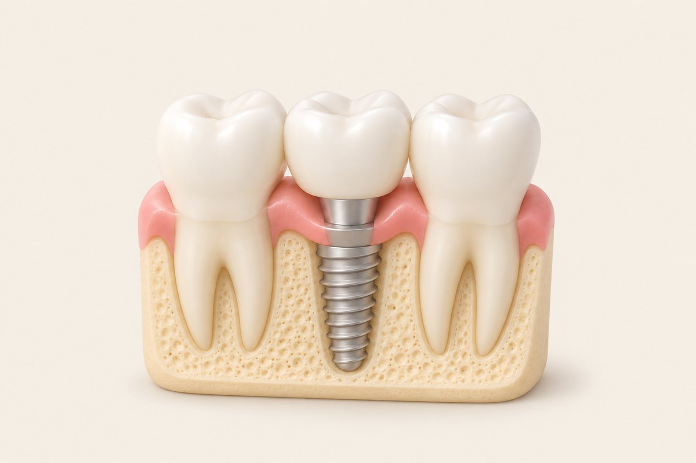
중점 진료
임플란트, 빠진 치아의 자리를 뿌리부터 다시 세웁니다.
치아가 빠진 자리의 잇몸뼈에 인공 뿌리를 심고 그 위에 보철물을 올리는 치료입니다. 옆 치아를 깎지 않고 빠진 자리만 회복할 수 있습니다. 일반 진료실과 분리된 수술 공간에서 진행하며, 3D CT로 뼈의 양과 신경 위치를 확인한 뒤 계획을 세웁니다. 뼈가 부족하면 뼈이식이나 상악동거상술을 함께 상담해 드립니다.
치아가 빠진 채로 지내고 계신 분
틀니가 헐겁거나 불편하신 분
만 65세 이상으로 건강보험 임플란트를 알아보시는 분
검진·CT 촬영
치료 계획 상담
식립 수술
보철물 연결
정기 점검
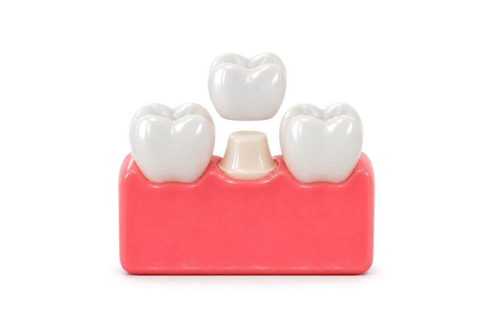
보철 치료
깨지고 닳은 치아를 씌우고 이어 줍니다.
충치나 파절로 손상이 큰 치아는 때우는 것만으로 버티기 어렵습니다. 크라운으로 치아 전체를 감싸 보호하거나, 인레이로 손상된 부분만 채우거나, 브릿지로 빠진 자리를 이어 줍니다. 씹는 힘이 걸리는 방향과 위아래 맞물림을 확인해 재료와 형태를 정합니다.
신경치료를 받은 치아가 있는 분
치아가 깨지거나 금이 간 분
오래된 보철물이 들뜨거나 냄새가 나는 분
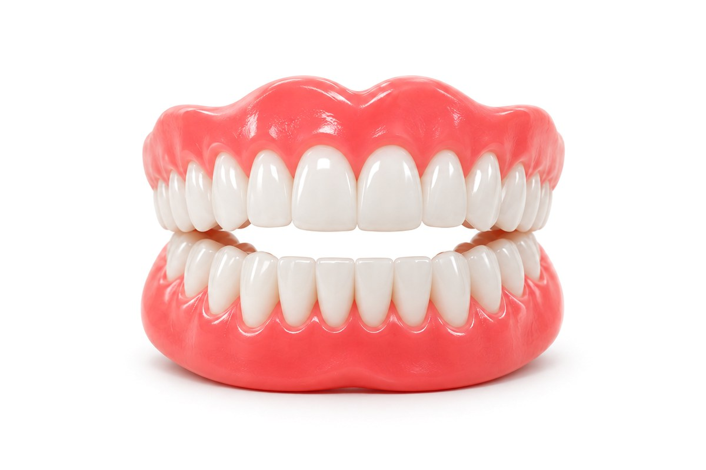
틀니
여러 개의 치아를 한 번에 회복합니다.
남아 있는 치아에 걸어서 쓰는 부분틀니와, 치아가 하나도 없을 때 쓰는 완전틀니가 있습니다. 처음 끼면 적응 기간이 필요하고 잇몸 모양이 변하면 헐거워지기 때문에, 만든 뒤의 조정과 점검이 중요합니다. 만 65세 이상은 건강보험 틀니 적용 여부를 확인해 드립니다.
빠진 치아가 여러 개인 분
지금 쓰는 틀니가 아프거나 자주 빠지는 분
임플란트 수술이 부담스러우신 분
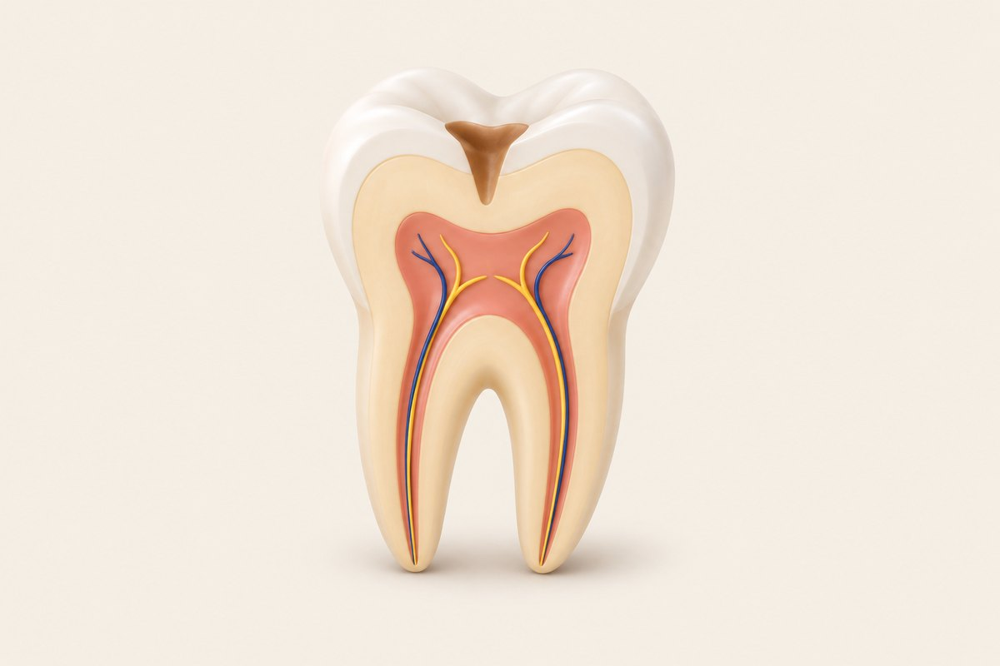
충치·신경치료
가능한 한 내 치아를 살립니다.
초기 충치는 썩은 부분만 제거하고 레진 등으로 채웁니다. 충치가 신경까지 닿으면 치아 속 신경관을 깨끗이 소독하고 채우는 신경치료가 필요합니다. 충치는 아프기 시작하면 이미 깊어진 경우가 많아, 통증이 없을 때 발견하는 것이 치아를 가장 많이 남기는 방법입니다.
찬물이나 단 음식에 이가 시린 분
씹을 때 찌릿하거나 욱신거리는 분
치아에 검은 점이나 구멍이 보이는 분
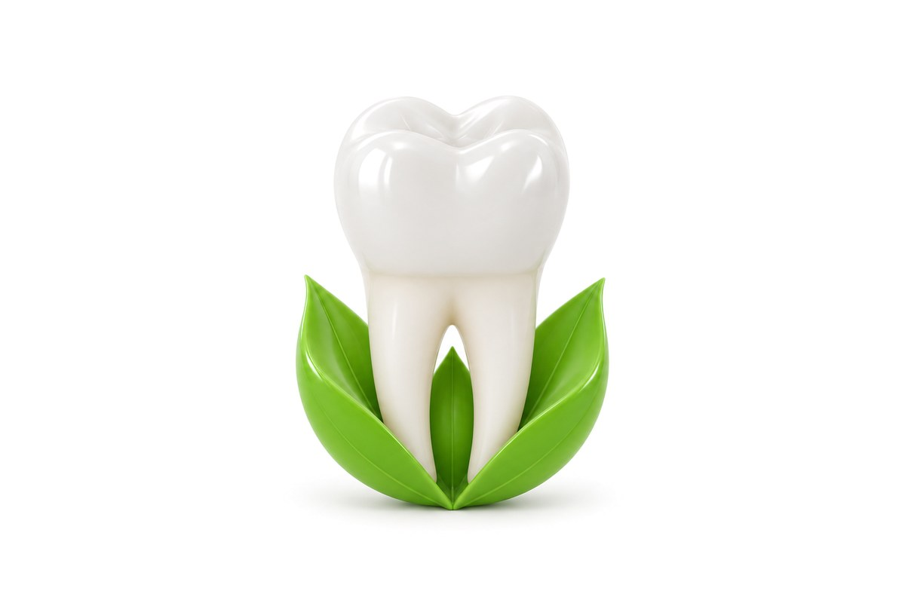
자연치아 살리기
뽑기 전에, 살릴 방법을 먼저 찾습니다.
한번 뽑은 치아는 되돌릴 수 없습니다. 충치가 깊거나 금이 간 치아, 신경치료 후에도 불편한 치아라도 재신경치료나 잇몸 치료로 더 쓸 수 있는 경우가 있습니다. 엑스레이와 CT로 뿌리와 주변 뼈를 확인한 뒤, 살릴 수 있는지와 예상되는 경과를 솔직하게 말씀드립니다.
발치해야 한다는 말을 듣고 고민 중인 분
신경치료한 치아가 다시 아프거나 붓는 분
씹을 때 시큰한 금 간 치아가 있는 분
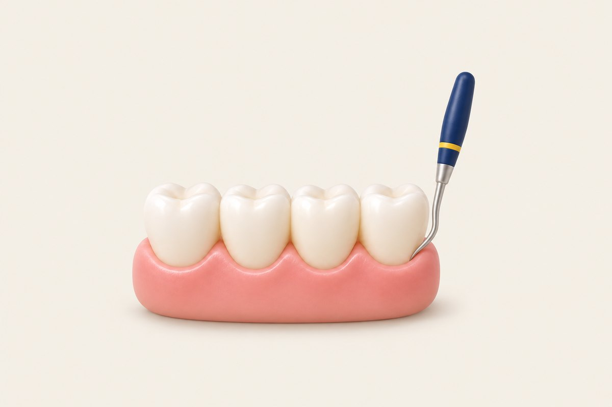
잇몸 치료
치아를 붙잡는 잇몸과 뼈를 지킵니다.
잇몸병은 통증 없이 진행되어 치아가 흔들릴 때에야 알게 되는 경우가 많습니다. 스케일링으로 치석을 제거하고, 염증이 깊으면 잇몸 아래 뿌리 면까지 단계적으로 치료합니다. 임플란트도 잇몸이 건강해야 오래 쓸 수 있습니다. 만 19세 이상은 연 1회 스케일링에 건강보험이 적용됩니다.
양치할 때 피가 나는 분
잇몸이 붓거나 입 냄새가 신경 쓰이는 분
치아 사이가 벌어지거나 흔들리는 분
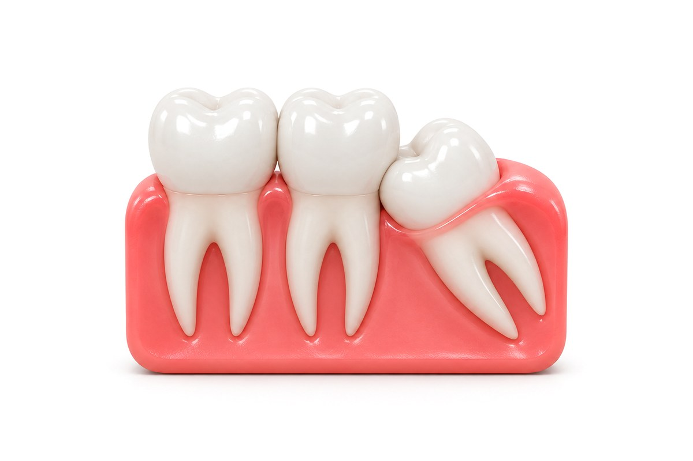
사랑니 발치
뽑아야 하는 사랑니인지 먼저 확인합니다.
모든 사랑니를 뽑아야 하는 것은 아닙니다. 바르게 나서 잘 닦이는 사랑니는 두어도 되지만, 비스듬히 누워 앞 어금니를 밀거나 주변에 염증을 반복해서 일으키면 발치를 권합니다. CT로 아래턱 신경과의 거리를 확인한 뒤 발치 방법을 정합니다.
사랑니 주변이 자주 붓고 아픈 분
사랑니와 앞 치아 사이에 음식이 계속 끼는 분
검진에서 누운 사랑니가 발견된 분
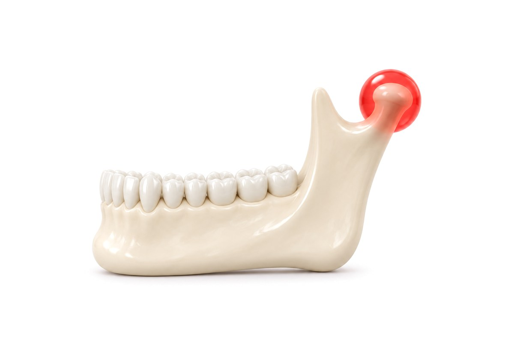
턱관절 질환
턱에서 나는 소리와 통증의 원인을 찾습니다.
입을 벌릴 때 턱에서 소리가 나거나 아프고, 입이 잘 벌어지지 않는다면 턱관절 질환일 수 있습니다. 이를 악물거나 가는 습관, 한쪽으로만 씹는 습관, 스트레스가 원인이 되는 경우가 많습니다. 대부분 습관 교정과 약물 치료, 교합안정장치(스플린트) 같은 보존적인 방법으로 치료하며, 증상이 오래되기 전에 진단받는 것이 좋습니다.
입을 벌리거나 씹을 때 턱에서 소리가 나는 분
아침에 턱이 뻐근하거나 입이 잘 벌어지지 않는 분
이를 악물거나 가는 습관이 있는 분
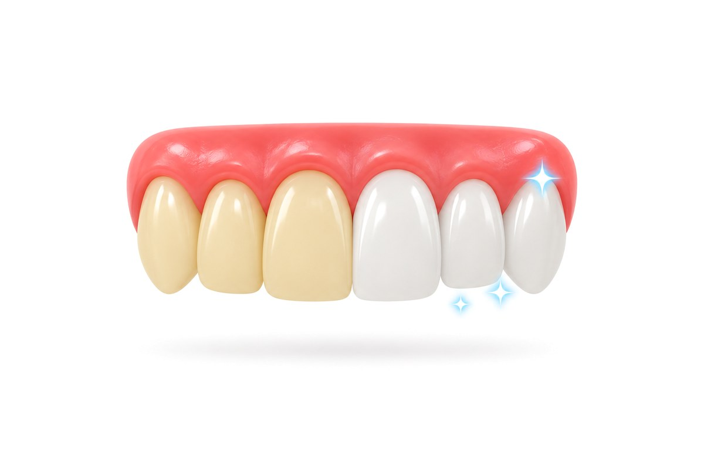
치아미백
치아를 깎지 않고 색을 밝게 합니다.
커피나 차, 나이에 따라 누렇게 변한 치아의 색을 미백 약제로 밝게 하는 치료입니다. 치아를 깎지 않으며, 치아 상태와 원하는 밝기에 맞춰 방법과 횟수를 정합니다. 치료 중 이가 일시적으로 시릴 수 있고, 밝아지는 정도와 유지 기간은 사람마다 다릅니다. 충치나 잇몸병이 있으면 먼저 치료한 뒤 진행합니다.
치아 색이 누렇거나 어두워 신경 쓰이는 분
결혼식이나 면접처럼 중요한 일정을 앞둔 분
치아를 깎지 않고 인상을 밝게 하고 싶은 분
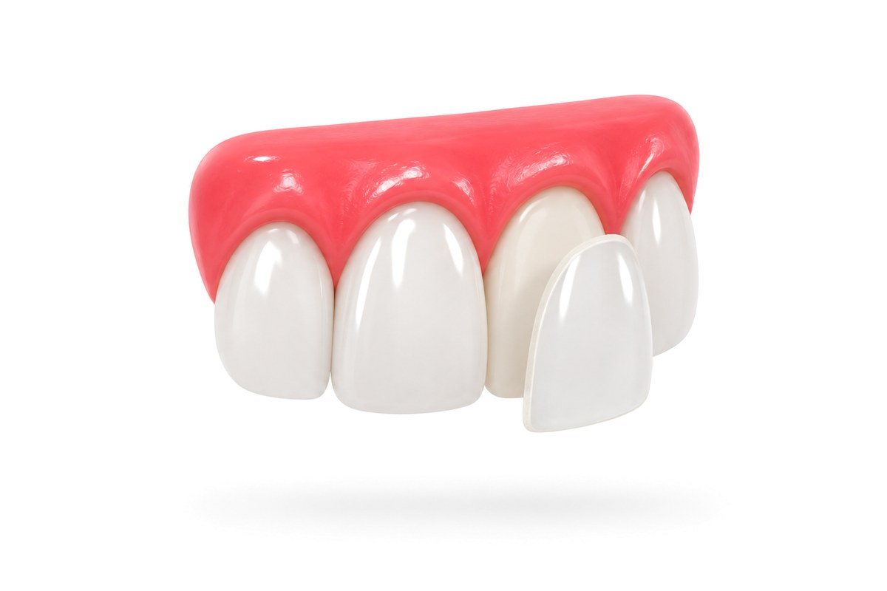
라미네이트
앞니의 모양과 색을 얇은 도자기로 다듬습니다.
치아 앞면을 얇게 다듬고 도자기로 만든 얇은 판을 붙여 모양과 색을 개선하는 치료입니다. 벌어진 앞니, 깨지거나 변색된 치아, 크기가 고르지 않은 치아에 쓸 수 있습니다. 한번 다듬은 치아는 되돌릴 수 없으므로 치아 상태와 맞물림을 먼저 확인하고, 미백이나 레진처럼 치아를 덜 다듬는 방법으로 충분한지도 함께 상담해 드립니다.
앞니 사이가 벌어져 있는 분
앞니가 깨졌거나 색이 변한 분
앞니의 크기나 모양이 고르지 않은 분
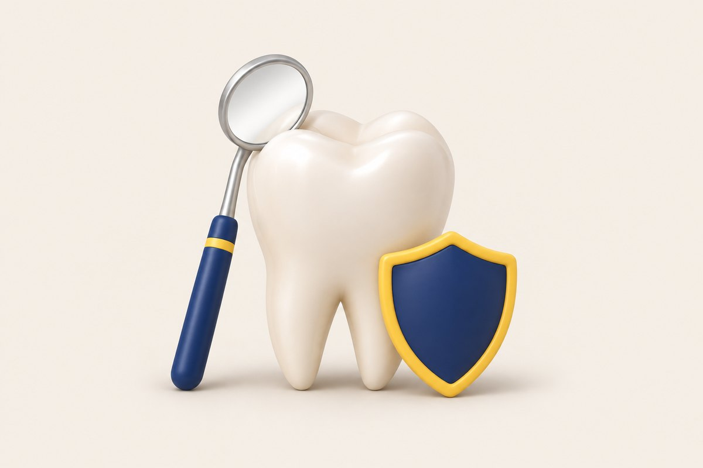
구강검진·예방
아프기 전에 오는 치과가 가장 좋은 치과입니다.
정기 검진으로 충치와 잇몸병을 초기에 발견하면 치료가 간단해지고 비용도 줄어듭니다. 국가 구강검진, 어린이 불소 도포와 실란트(어금니 홈 메우기), 올바른 칫솔질 안내까지 가족 모두의 예방 진료를 봅니다.
치과에 다녀온 지 1년이 넘은 분
국가 구강검진 대상이신 분
아이의 충치 예방이 필요한 보호자
AT A GLANCE
한눈에 보는 서울튼튼플란트치과
전문의 진료보건복지부 인증 통합치의학과 전문의
19:30매월 둘째·넷째 목요일 야간진료
토요일 진료09:00~14:00, 점심시간 없이
독립 수술 공간일반 진료실과 분리된 임플란트 센터
OUR PHILOSOPHY & DOCTOR
제 가족에게 권할 수 있는 치료만 권하겠습니다
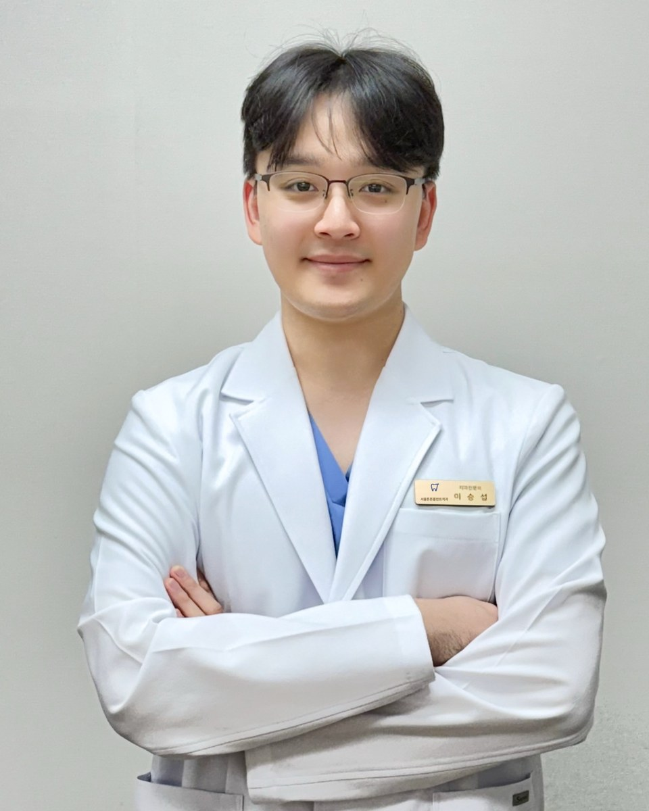
“왜 이 치료가 필요한지, 어떤 순서로 진행되는지 이해하실 때까지 설명드립니다.”
치과가 무서워서 미루다 오시는 분이 많습니다. 미룬 만큼 치료가 커지는 것이 늘 안타까웠습니다. 편하게 물어보실 수 있고, 듣고 나면 스스로 결정하실 수 있는 진료를 하겠습니다.
대표원장이승섭
보건복지부 인증 통합치의학과 전문의
전 서울효치과의원 원장
전 바른마음치과의원 원장
서울대학교 치의학대학원 치의학교육연수원 고급치의학 연수과정 수료
서울대학교 치의학대학원 치의학교육연수원 임플란트 임상치의학 연수과정 수료
닥터스 Endo Seminar 수료
Dental bean 조용석 임플란트 black 코스 수료
Dental bean 나기원 prep 세미나 수료
강원대학교 치과대학 졸업
춘천시 보건소 역학조사관
둘러보기
어떤 곳에서 진료받게 되나요?
접수부터 진료실, 임플란트 센터, 상담실까지 미리 보실 수 있습니다.
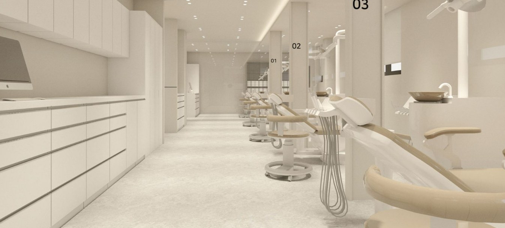
진료실접수·대기 공간임플란트 센터
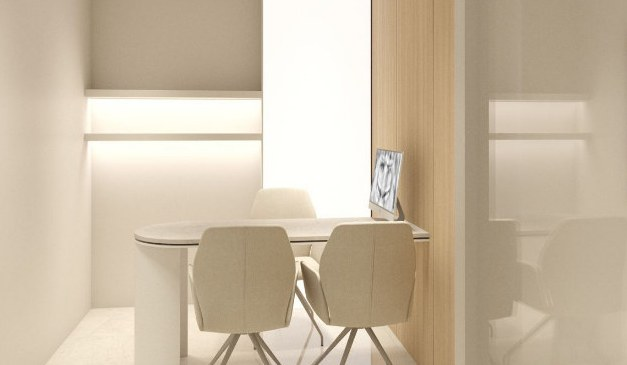
상담실
현재 이미지는 인테리어 설계 투시도이며, 공사가 끝나면 실제 사진으로 바뀝니다.
FAQ
처음 오시는 분들이 많이 물어보세요
예약 없이 방문해도 진료받을 수 있나요?
가능합니다. 다만 예약하신 분을 먼저 진료하기 때문에 기다리실 수 있어, 전화로 미리 시간을 잡고 오시길 권합니다.
임플란트는 건강보험이 적용되나요?
만 65세 이상이시면 평생 2개까지 건강보험이 적용됩니다. 구강 상태에 따라 적용 여부가 달라질 수 있어 검진 후 정확히 안내해 드립니다.
임플란트 치료는 얼마나 걸리나요?
뼈 상태와 심는 위치에 따라 다릅니다. 뼈이식이 필요한 경우 기간이 더 길어질 수 있으며, CT 촬영 후 예상 일정과 내원 횟수를 말씀드립니다.
야간진료는 언제 하나요?
매월 둘째·넷째 주 목요일에 19:30까지 진료합니다. 퇴근 후 방문이 필요하시면 이 날짜로 예약해 주세요.
토요일에도 진료하나요?
토요일은 09:00부터 14:00까지 점심시간 없이 진료합니다. 일요일과 공휴일은 휴진입니다.
서울튼튼플란트치과는 어디에 있나요?
강원특별자치도 홍천군 홍천읍 홍천로8길 4, 2층에 있습니다. 2027년 1월 개원 예정입니다.